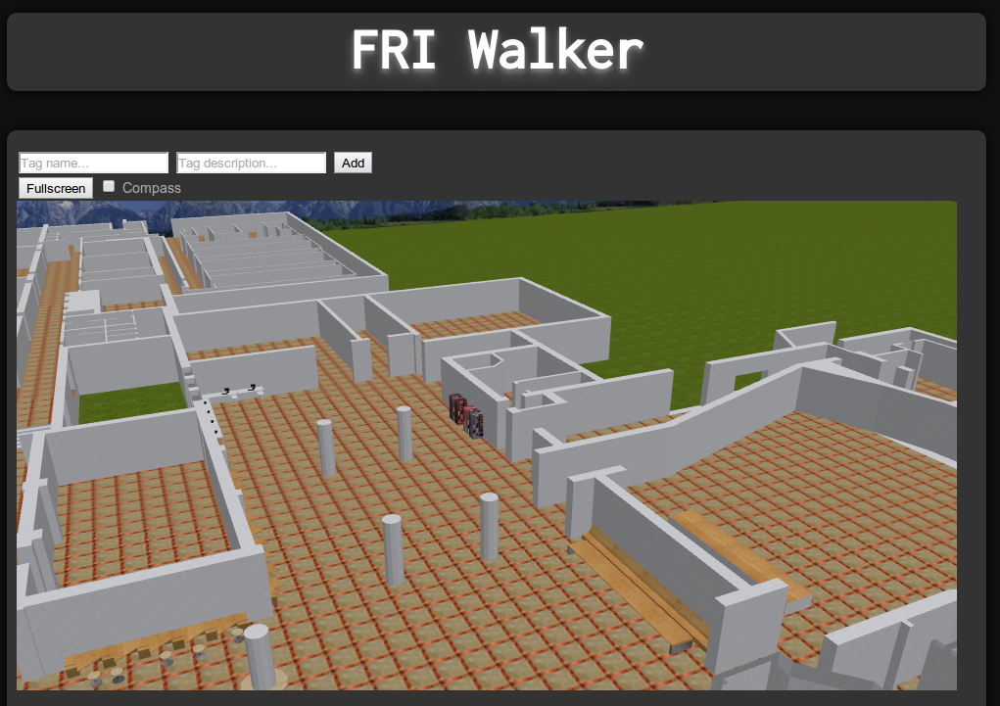
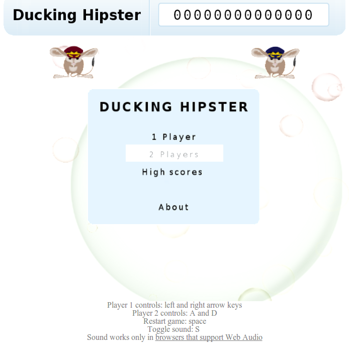
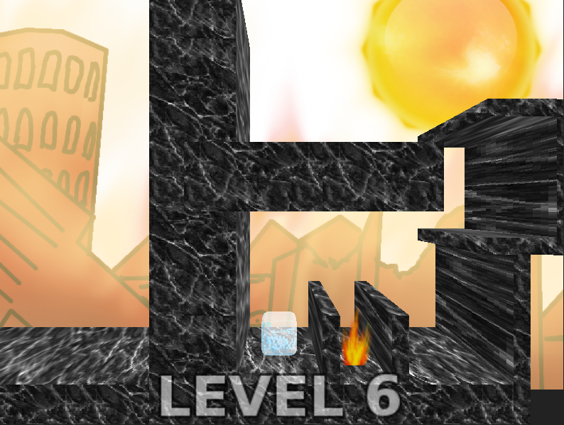
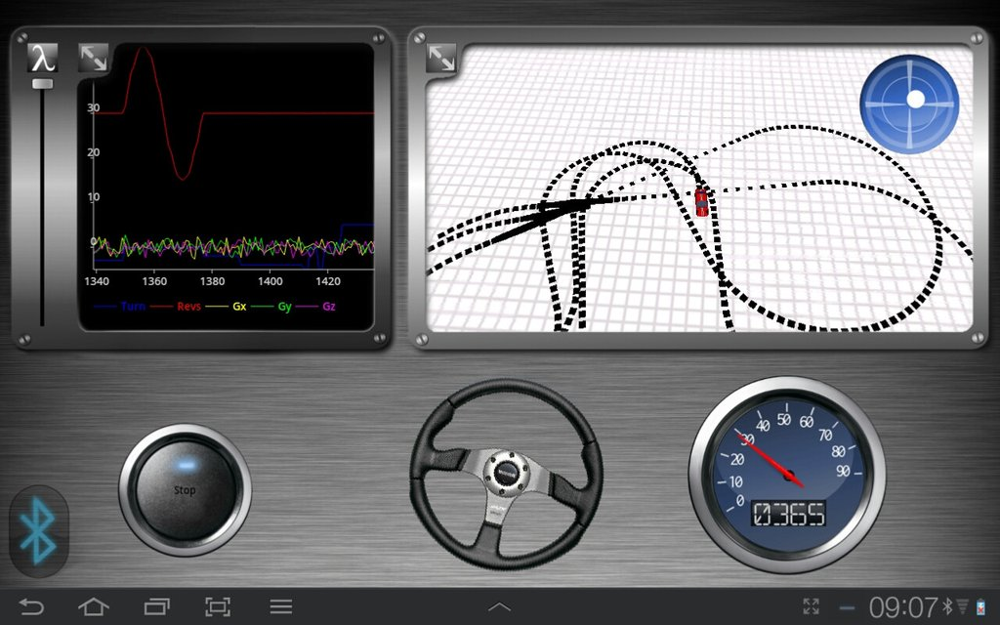
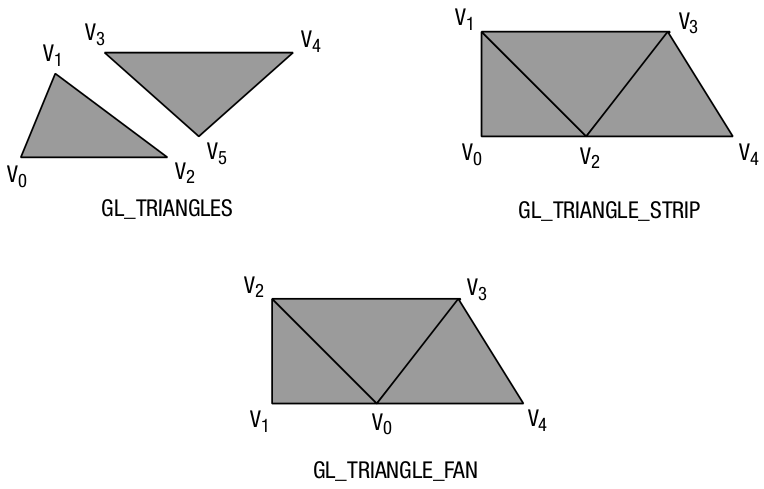

WebGL
Anže Pečar / @smotko
http://smotko.si/
freenode: #psywerx
About Me
WebGL
  
OpenGL projects for Android

Other stuff
- Web (Python, PHP, Perl, trying to get into Scala)
- Desktop (MS .NET stack)
- Linux guy
What is WebGL?
- Javascript API
- GPU accelerated
- OpenGL ES 2.0
Why is it awesome?
Browsers?
- Firefox 4.0+
- Chrome 8.0+
- Safari 5.1+
- Opera 12.0+
- Android (Chrome 25 beta, Firefox)
- Blackberry Browser 10.0
Source: http://caniuse.com/webgl
Blacklisted drivers?
Not all graphics cards are fully supported
--ignore-gpu-blacklist
Hello rectangle!
No
fillRect
function! Instead:
- Get WebGL context
- Setup shaders
- Create buffer
- Draw two triangles
1. Get WebGL context
var canvas = document.getElementById("canvas");
var gl = canvas.getContext("experimental-webgl")2. Setup Shaders
<script id="2d-vertex" type="x-shader/x-vertex">
attribute vec2 a_position;
void main() {
gl_Position = vec4(a_position, 0, 1);
}
</script>
<script id="2d-fragment" type="x-shader/x-fragment">
void main() {
gl_FragColor = vec4(0,1,0,1); // green
}
</script>2. Setup Shaders (cont.)
var program = gl.createProgram();
var vshader = createShader(vstr, gl.VERTEX_SHADER);
var fshader = createShader(fstr, gl.FRAGMENT_SHADER);
gl.attachShader(program, vshader);
gl.attachShader(program, fshader);
gl.linkProgram(program);
gl.useProgram(program);
// look up where the vertex data needs to go.
var positionLocation = gl.getAttribLocation(program, "a_position");function createShader(str, type) {
var shader = gl.createShader(type);
gl.shaderSource(shader, str);
gl.compileShader(shader);
if (!gl.getShaderParameter(shader, gl.COMPILE_STATUS)) {
throw gl.getShaderInfoLog(shader);
}
return shader;
}3. Create Buffer
// Create a buffer and put a single clipspace rectangle in
// it (2 triangles)
var buffer = gl.createBuffer();
gl.bindBuffer(gl.ARRAY_BUFFER, buffer);
gl.bufferData(
gl.ARRAY_BUFFER,
new Float32Array([
-1.0, -1.0,
1.0, -1.0,
-1.0, 1.0,
-1.0, 1.0,
1.0, -1.0,
1.0, 1.0]),
gl.STATIC_DRAW);
gl.enableVertexAttribArray(positionLocation);
gl.vertexAttribPointer(positionLocation, 2, gl.FLOAT, false, 0, 0);4. Draw Two Triangles
gl.drawArrays(gl.TRIANGLES, 0, 6);A quick optiomization
[-1.0, -1.0, -1.0, 1.0, 1.0, -1.0, 1.0, 1.0]gl.drawArrays(gl.TRIANGLE_STRIP, 0, 4);How to get a 3D shape on a 2D screen?
With the power of linear algebra!
Projection

Perspective Projection:

var view = mat4.frustum(left, right, top, bottom, near, far);
var camera = mat4.lookAt([0,0,-3], [0,0,0], [0,1,0]);gl_Position = view * camera * a_position;Making things move
var model = mat4.identity();
mat4.translate(model, [x,y,z]);
mat4.rotate(model, angle, [x, y, z]);
mat4.scale(model, [x, y, z]);gl_Position = view * camera * model * a_position;Textures
var texture = gl.createTexture();
texture.image = image;
gl.pixelStorei(gl.UNPACK_ALIGNMENT, true);
gl.bindTexture(gl.TEXTURE_2D, texture);
gl.texImage2D(gl.TEXTURE_2D, 0, gl.RGBA, gl.RGBA, gl.UNSIGNED_BYTE, texture.image);
gl.texParameteri(gl.TEXTURE_2D, gl.TEXTURE_MAG_FILTER, gl.LINEAR);
gl.texParameteri(gl.TEXTURE_2D, gl.TEXTURE_MIN_FILTER, gl.LINEAR_MIPMAP_NEAREST);
gl.generateMipmap(gl.TEXTURE_2D);
gl.bindTexture(gl.TEXTURE_2D, null);uniform sampler2D s_texture;
varying vec2 v_uvCoord;
gl_FragColor = texture2D(s_texture, v_uvCoord.st);UV Mapping

Why Mipmaps?

Text
No easy way to draw text with WebGL
We use a texture sprite:

Three.js
Can make your life much easier.
Hello Cube!
var scene = new THREE.Scene();
var camera = new THREE.PerspectiveCamera(75, window.innerWidth/window.innerHeight, 0.1, 1000);
var renderer = new THREE.WebGLRenderer();
renderer.setSize(window.innerWidth, window.innerHeight);
document.body.appendChild(renderer.domElement);
var geometry = new THREE.CubeGeometry(1,1,1);
var material = new THREE.MeshBasicMaterial({color: 0x00ff00});
var cube = new THREE.Mesh(geometry, material);
scene.add(cube);
camera.position.z = 5;
function render() {
requestAnimationFrame(render);
cube.rotation.x += 0.1;
cube.rotation.y += 0.1;
renderer.render(scene, camera);
}
render();Problems
[TODO]